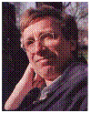

|
ONTOLOGY AT BUFFALO
Ontology is a foundational
discipline of philosophy, which has its origins in ancient Greece and is
represented in our own day by the work of analytical metaphysicians such as
David Lewis and David Armstrong. Ontology
in this philosophical sense is a theoretical discipline. It is (roughly) the science
of what is, of the kinds and structures of objects, properties, events,
processes and relations in every area of reality.
At the same time ontology is a rapidly growing practical discipline
at the intersection of philosophy and information science. Ontological tools and
theories are increasingly being applied in bioinformatics, medical
informatics, intelligence analysis, management
science, in culture and museum informatics and in other fields, where they
serve as a basis for improved classifications, information integration and
automatic reasoning. The world’s
first conference on applied ontology was held in Buffalo in 1998,
and the first issue of the new journal Applied Ontology will be published in 2006.
With the increasing importance
of ontology-based applications comes the need for research and teaching in
the theoretical foundations of ontology. The University at Buffalo (UB)
Department of Philosophy is a leading center of research in theoretical
ontology. The work of six faculty members in the Department is focused
primarily on ontology and UB includes also applied ontologists in a variety
of disciplines, including biomedicine and geospatial analysis.
Philosophers with a primary
focus in ontology in UB’s Department of Philosophy include:
|
|
Barry
Smith,
Director of the National Center for Ontological
Research;
author of some 400 papers on ontology. Editor of The Monist.
|
|
|
|
Thomas Bittner, specialist in formal
ontology and its applications in geospatial and biomedical informatics
|
|
|
|
Maureen Donnelly, specialist in logic with
applications to ontology-based reasoning in bioinformatics and other
fields
|
|
|
|
Jorge Gracia, author of major works on
metaphysics and its history including Individuality (1988) and Metaphysics
and Its Task (1999)
|
|
|
|
David
Hershenov, author of important papers on ontological aspects of medicine
and biology
|
|
|
|
Fabian Neuhaus, logician and formal
ontologist (Research Fellow, National Center for
Biomedical Ontology)
|
|
|
|
Neil
Williams,
philosopher working on causation, dispositions, and systematic
metaphysics
|
|
|
Philosophers
in the Department with interests in ontology and metaphysics include
also:
|
|

|
Randall Dipert, research in logic,
philosophy of mathematics and ontology; author of Artifacts, Art
Works, and Agency (1993)
|
|
|
|
Kenneth M. Ehrenberg, working on the functional
nature of law and the normative patterns in legal systems
|
|
|
|
Michael W. McGlone, research on theories of
communica–tion, the semantics-pragmatics interface, and the ontology of
naming and identification
|
|
|
|
William J. Rapaport, philosopher and computer
scientist working on knowledge representation and reasoning
|
|
|
|
Ken Shockley, research interests include
institutional design, the ontological status of collectives, collective
agency, and collective responsibility.
|
|
|
|
Jiyuan
Yu,
author of important works on Aristotle; specialist in Greek metaphysics;
author of The Structure of Being in Aristotle's Metaphysics (2003)
|
|
|
|
|
|
PhD Program
Students who wish to acquire a
thorough grounding in the theory and practice of ontology are invited to apply
for a range of enhanced PhD fellowships. All students will participate in
the UB PhD program in philosophy. In addition to courses in
ontology/metaphysics they will acquire expertise in a range of
philosophical disciplines including logic, epistemology, ethics and the
history of philosophy.
A full description of the
Department’s PhD Program is available here.
Our students benefit not only
from our faculty expertise but also from an intense series of ontology
seminars, workshops and conferences.
Buffalo is home, with Stanford
University, to the National Center for Ontological Research (NCOR), and the UB Department
of Philosophy plays a leading also within the National
Center for Biomedical Ontology (NCBO), a consortium funded by the National
Institutes of Health within its Roadmap project.
The Philosophy Department
collaborates closely with prominent ontology research institutions
throughout the world, including the National Library of Medicine, the Gene
Ontology Consortium, the European Center for
Ontological Research and the Japanese Ontology Forum. Our students can
benefit also from internship and exchange programs with a variety of US and
international institutions. The Department has a strong placement record,
and the graduates of our PhD program have obtained not only academic
positions but also positions as professional ontologists working for
government agencies and private industry.
Courses
Our goal is to train
philosophers who can participate in research and teaching of theoretical
ontology at a high level, whether as formal ontologists, as specialists in
the history of metaphysics or in other ways.
Courses offered in ontology in
the Department include:
Philosophical
Ontology
Analytic Metaphysics
Categories and Categorization
Causation
Formal Ontology
Language and Ontology
Mereology
Metaphysics
Problems in Ontology
Applied
Ontology
Biomedical Ontology
Geospatial Ontology
Formal Ontology and Semantic
Interoperability
Knowledge Representation and
Reasoning
Law and Ontology
Ontology of Social Reality
History
of Ontology
Aristotle’s Metaphysics
Medieval Ontology
Texts in Ancient Greek Metaphysics
Research Projects
Unusually for a graduate
program in philosophy, our students have the opportunity to become involved
in collaborative research projects funded by institutions such as the
National Institutes of Health, the National Science Foundation and the US
Agency for International Development.
Examples of such projects
include:
Researching the ontology of
cultural resources for Digital Rights Management. How much can you change a
literary text, or an MP3 file, before it becomes a different object?
Auditing of the Gene Ontology.
How best can we organize information about genes and gene products to draw
consequences for our understanding of human diseases?
Consulting for the Institute of Liberty and Democracy (Lima, Peru)
for a project on the ontology of informal market institutions, in
conjunction with the newly established High Level Commission on the Legal
Empowerment of the Poor. How can we understand the extralegal institutions
developed by the poor in Africa and other parts of the third-world in such
a way as to devise programs for economic development which will grow
naturally from what already exists?
The University at Buffalo
With approximately 27,000 graduate and undergraduate students, UB is the largest
institution of higher learning of the State University of New York system.
It is a graduate center and a major US public university located on the
US-Canada border near Niagara Falls. Because it is a public university, its
tuition rates are highly competitive. UB is one of only two public members
of the prestigious Association of American Universities in New York State and New England, and thus
stands in the first rank among the nation’s research-intensive public
universities.
page last updated October 8, 2005
|